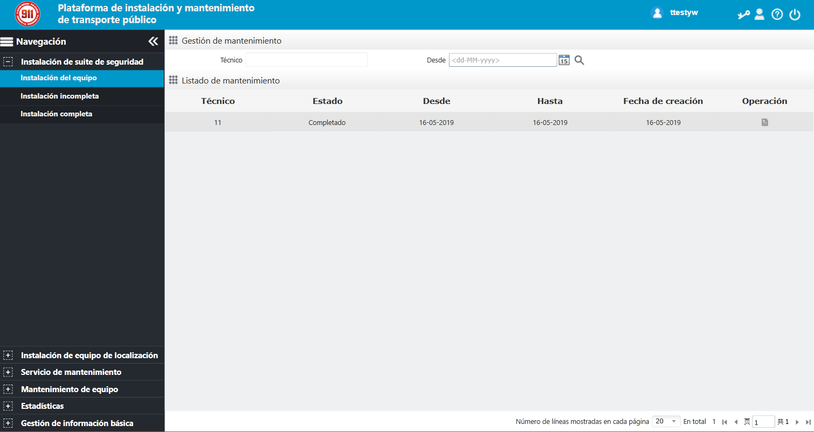

Se puede dividir la pantalla de negocio según la distribución de interfaz en barra de control de navegación, barra de menú
de navegación y área de teléfono virtual, como se muestra a continuación:

Fig 91 Distribución de pantalla para operación y mantenimiento de administrador de servicio
Barra de control de navegación de la interfaz derecha superior, pueda hacer clic en el botón correspondiente para utilizar
las funciones relacionadas en cualquier momento durante la operación.
El lado izquierdo de la interfaz es la barra del menú de navegación, que incluye la instalación del suite de seguridad, la
instalación del dispositivo de posicionamiento, la solicitud de mantenimiento, el mantenimiento del dispositivo, las estadísticas
de consultas y la gestión de la información básica. Puede hacer clic en el menú correspondiente para usar las funciones relacionadas
en cualquier momento.
En la parte inferior derecha de la interfaz se encuentra el área de visualización de contenido, que puede mostrar diferentes
contenidos de servicios de acuerdo con el menú seleccionado en el lado izquierdo.